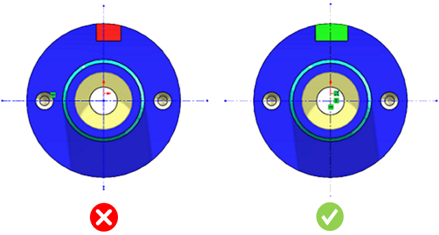

旋削パーツにおける軸方向スロットおよびキー溝の幅は、回転軸に対して対称である必要があります。
軸方向スロットおよびキー溝の幅が回転軸に対して対称でない場合、他の旋削パーツと組み付ける際に問題が発生します。
本ルールは、キー溝の端部はR形状にすべき で説明されている種類のキー溝形状に適用されます。
軸方向スロットおよびキー溝は、回転軸に対して対称となるように設計してください。本ルールは、軸方向スロットおよびキー溝の幅が回転軸に対して対称であるかどうかを判定しますが、これは多くの場合、モデリング時の誤りによって発生します。
本ルールは、軸方向スロットおよびキー溝の幅が回転軸に対して対称であるかどうかをチェックするため、構成情報は不要です。
